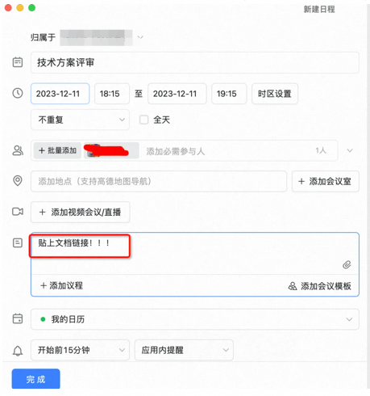
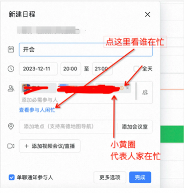

如何高效打工？本文作者站在开发的视角总结了一些打工技巧，包括如何高效开会、如何与人沟通、如何做PM等，希望可以给大家提供一些帮助。如果您的工作中完全不需要自己写PRD 、技术方案、测试用例，那么这篇文章除了会浪费您宝贵的15分钟之外，别无益处，可以绕行了。很多新入职的工友反馈，大家现在除了编码之外，在厂子里还有很多七七八八的杂活才是工作耗时的大头，比如有些项目里面，沟通&对接相关的工作占比甚至大于70%，实际写代码&自测也就一两天，前面那些细碎的内容，也不方便录入工时，非常苦恼。出于对工友的爱和保护，鄙人决定在这里分享一些打工的技巧，希望能提供一些微不足道的小帮助。首先，作为会议发起人希望大家能自觉做到如下几点：提前准备文档
提前准备好会议文档，比如技术方案评审，在你评审之前，至少要写好了完整的技术文档，并且提前私下里和参会的上下游开发勾兑过协议，并且在开会前，把文档贴在日程里面。最讨厌都做方案评审了，上下游都还在抓瞎，最后留下来一大堆action“会后再对”，一场会议出现超过3个“会后再对”就一定有严重的信息gap。为了防止有些眼神不好的工友不知道贴在哪里，我贴心做了大量截图，大家可以贴在日程描述，或者只贴在日程的评论区。
控制会邀时间
我有个朋友，首先这个朋友确实不是我本人，其次这个朋友有个习惯：任何超过1小时的会邀，他都默认不参加。因为超过1小时的会议，除非是线上故障的复盘，否则肯定又臭又长不确定的点又多。不管是技术方案还是产品方案，作为一线技术人员，确实可以绕行，这种会我认为一个大团队，派一个代表参加就好了，比如PD在开发就可以不在了，开发在就不要测试也旁听了。所以我希望大家能在做好充分准备的前提下，合理评估会议真正需要的时间。根据我的经验，5人日以内的业务需求，技术方案评审可以控制在15分钟；10人日以内的需求，技术方案评审可以控制在30分钟左右。1小时的技术方案评审，比较适合多个子域联合评审or全链路技术方案串讲。至于《勾兑接口协议》、《拉齐开发进度》、《XX项目技术日会》这种单个事项的信息同步，10分钟，最多10分钟就够了。10分钟真的可以做很多事情，如果大家发现自己10分钟还没能描述清楚某个问题，我建议是不要开会，直接去需要沟通的那个人面前，搬个凳子坐他身边进行一些结对编程。提前确认别人有没有时间
我有个朋友，首先这个朋友确实不是我本人，其次这个朋友还有个习惯：任何发过来提示自己日程冲突的会邀，他都默认不参加。因为如果自己作为一个会议参与人，真的这么重要，那么至少要有人提前钉钉打个招呼描述一下背景，其次应该提前发起，既然提前发起，就要检查下核心人员是否available。
我理解很多倒排期的需求或者线上紧急事项，不得已要临时拉会。但是作为一个职业的打工人，如果你10个会邀有8个都是临时拉起来的，那真的很想问一句：“规划”这两个字在你的打工人词典中是不存在的吗？个人经验，一个明确上线时间在15天之内的需求，pd至少要提前2天约prd评审会邀，开发在明确技术方案之后，要至少提前2天发技术方案评审会邀。为了防止有些眼神不好的工友不知道如何查看参与人繁忙，贴图如下：
提前阅读会议文档
正常情况下，任何会议都要有个主题，主持人应该提前准备文档，如果对方没有主动抛出来，你在参会前需要主动去要。如果某个工友连续3次拉会，但是没有任何文档准备，你可以默认这个工友不是很需要你了，这场会议有你没你区别不大，可以考虑不去了。和合作工友互为backup
正常的产技团队，可能在项目初期，或者某些前期对焦项目中，需要频繁接到名字比较玄幻的会邀，比如《AE下单优化讨论》、《23年xx协议边界升级沟通》、这种会议，PD、开发、测试，大家如果比较忙，可以出一个人就好了。同理，作为一个开发团队，跨域需求，全链路的串讲会议，只需要域内接口人出席就好了，除非有需要某个特定人员参与的特定事项。时间冲突的会议要提前说
如果会议和自己时间冲突，可以大大方方的点一下暂定或者拒绝，并且主动同步会议主持人，然后确认谁作为自己的的backup参加会议。如果你有backup，你有必要提前给对方交代好相关背景，不要让backup一脸懵逼的出现在会议现场。如果你没有backup，大可以直接告诉对方。因为结果无非只有两种：1.你很重要，会议改时间 2.你很不重要，会议如期举行。总之是好过一群人在会议室里面call你，然后在浪费了所有人3分钟之后，听到你在电话那一头尴尬的说一句我不方便，要愉快的多。希望大家有些边界感
正式场合，比如RRD评审或者技术方案评审，大家不要串台。产品方案评审的时候，希望开发同学不要提问PD有关技术方案的细节，请专注于需求理解本身。技术方案评审的时候，希望PD不要太多介入技术细节，比如表结构设计，系统架构。技术方案评审前要讲清楚背景
哪怕大家都参与了PRD评审，在技术方案评审的时候，也必须重复一下本次开发的需求范围。确保大家理解一致。
一定要自测
单元测试、集成测试、页面点点按钮。
能执行的自测方案都要尽量去实施，我发现好多工友有点子测试依赖综合症，好像我们的APP的这些个按钮，只有测试才有权限点击一样。动不动造个测试订单，造个trace，什么都要抓个测试来做。有些工友甚至连自己产品的debug包都不装，抓trace要么找前端要么找测试。我真的很建议HR巡检一下所有的产技团队，看看谁工作手机没装测试包。不要背着测试承诺任何事情
任何线上变更（功能代码发布、配置项变更、等等）的上线时间、风险范围，不管是PD还是运营来问开发，都不要背着测试给出任何口径。
所谓的测试人日= 1/2 开发人日，这种粗估策略，只适用于开发&测试内部排期用，严肃场合的评估，需要测试同事亲自评估。先找产品
跨域合作，尤其是涉及到新功能开发的，建议开发同学不要直接绕过对方产品直接找其他团队的开发。
让PD沟通好排期和优先级之后，给到你指定开发再去对接。说清楚前因后果
跨团队协作的时候，任何沟通，尤其是开发之间的，希望大家提前快速完整的描述好业务背景。一个团队的开发，对另一个团队的业务真的没有大家想象的那么熟悉。
你需要任何帮助或者协作的时候，请务必提前整理好文档或者话术，说清楚因为xxx，所以需要对方提供xxxx帮助。项目管理话题太大了，俺也不太懂，这里只提供一些针对开发同学，比较简单实用的工作技巧。拉群
是的，就是先拉钉钉群，拉一个xxx干活群。不要用会议群，谢谢。看了太多项目，拖拖拉拉聊了一星期，开了100个会议群，到处都是不同的排期口径和发言人，太伤了子域1：对应开发、对应PD、对应测试子域2：对应开发、对应PD、对应测试
技术方案评审时间：xxxxx联调时间：x'x'x联调环境：dpath(xxxx)提测时间：xxx发布时间：xxxx
PRD: 链接1、PRD: 链接2技术方案：链接1、链接2
约会
技术方案评审、提测、发布计划review
这些会议，都要根据排期时间，提前2天以上约好日程。如果明确了后天就是要技术方案评审，哪怕今天你一个字都没写，也要先把日程约上。熟悉技术方案
10人日以内的小需求，作为技术接口人或者技术PM，要保证自己了解所有方案技术细节，哪怕是那些不需要你来写的代码。大的项目，至少需要了解自己大组的各个子域，对外的协议变更。比如你知道子域A需要新增一个字段abc，供子域B消费。你不需要知道abc的实现逻辑，但是你必须要知道，这儿有个新增的abc。否则，去参加全链路会议会毫无价值，大眼瞪小眼，有问题问你也不知道，很尴尬。汇总一下技术方案
搞一个单独的文档，汇总一下所有文档，真的真的很重要。尤其是涉及的子域比较多的时候，最好画一个全链路的图，这个图不需要有太多细节，丑也没关系。关键是可以表现一下需要参与改造的子域，以及上下游，方便串讲的时候梳理依赖关系，避免开发到了一半，发现需某个团队额外介入，到时候大家都很为难。真的最最讨厌互相甩锅了。主动参加全链路会议
如果这是一个大项目，而你只是某个子域的技术接口人，AKA域内PM（大部分工友在大项目里面都是这个角色）。那么参加各种项目周会、日会、对焦会，是你义不容辞的责任，除非你的PDM、PTM刚好愿意代劳。另外如果你参加，保证信息上传下达的同时，不要，不要再拉其他工友一起去了，节省一些人力资源。主动寻求PMO的帮助
当我第一次发现项目里面有PMO这个角色的时候，非常认真的问过他/她几个问题——尤其是开发中，业务还在反复变更需求范围的drama项目。多年来，我一直奔走呼吁，建议那些需要立项的，有PMO团队介入的需求。要在项目里面，给到PMO最大的权力，包含并且不限于：《PRD sign-off之后，拒绝临时变更的权力》、《开除项目成员的权力》…比较遗憾的是，目前PMO同学的权力还比较有限。所以据我所知，就一线技术同学的视角来说，能提供的主要帮助包括并且不限于如下几点：找会议室。如果你需要会议室，但是在预期的时间段内，订不到任何会议室，建议找PMO协调。
拉架。如果不幸，项目进展中确实发生了一些不愉快的争执，不管是跨团队技术之间的信息GAP，还是业务需求的临时变更，都一定要及时同步给PMO，寻求PMO的协调，不要单打独斗。
上报风险。所有已知风险，会影响开发or测试进展的事项，必须第一时间同步到PMO，尤其是，需要升级到各个子域主管关注的关键问题，最好由PMO统一上升。
抓人。如果真的发生了，开发或者测试途中，技术侧发现当前项目前期评估出现遗漏，需要其他团队的PD甚至开发介入，最好由PMO牵头协调资源，不要技术之间直接沟通。
如果这个文章对你有帮助，不要忘记 「在看」 「点赞」 「收藏」 三连啊喂！